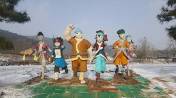

주변 인물

소설 원전에 등장하는 사람뿐 아니라, 현대 매체에서 중요하게 각색되는 사람들도 있으므로 여기에 정리.
- 홍상직 - 아버지. 소설 이후로는 홍정승 혹은 홍판서이라는 성명으로 각색된다. 원래는 자신을 아버지라고 부르지 못하는 길동의 고통을 방자해질 것을 우려해 외면하고 꾸짖었지만 속으로는 마음에
걸렸는지 길동이 집을 떠나면서 마지막 소원으로 호부호형을 허락해 달라고 하자 지금까지 별 대수도 아닌
것에 내가 너무 집착했다며 원대로 하라고, 이제부터는 나를 아버지라고 부르고 인형이를 형이라고 부르라며 선선히 허락한다.
- 홍인형 - 소설에서 형으로 등장하는 사람. 적자로, 소설 이본에 따라서는 홍길현이란 성명으로 나오기도 한다. 따뜻하고 강직한 성품으로서 어른스러운 사람이다. 그 덕분에 도적이 되어 버린 홍길동의
일탈성 면모를 더
느끼게 하는 바람직한 형을 대표하는 캐릭터.
- 백운도사 - 사람을 죽이고 쓸모없는 사람이 된 홍길동에게 도술을 가르쳐 준 선인. 원전에는 전혀 등장하지 않고 홍길동에게 스승 자체가 없으나 왜인지 매체에서 자주 나온다.
Home